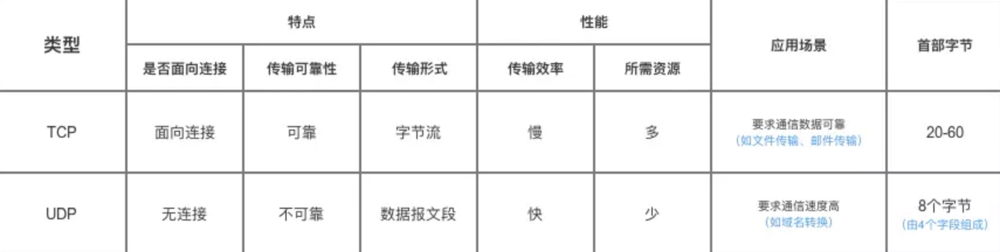

1. 网络模型

五层协议中和了OSI体系结构与TCP/IP体系结构的优点。
1.1 OSI体系结构
OSI参考模型将通信功能划分为7个分层，称作OSI参考模型，具体分层从上之下如下：
应用层：为应用程序提供服务并规定应用程序中的通信相关的细节。包括文件传输，电子邮件，远程登录（虚拟终端）等协议。
表示层：将应用层处理的信息转换为适合网络传输的格式，或将来自下一层的数据转换为上层能够处理的格式。因此他主要就是复杂数据格式的转换。
就是将数据固有的数据格式转换为网络标准传输格式。
会话层：负责建立和断开通信连接，为数据流动的逻辑通路，负责数据分割等数据传输相关的管理。
传输层：起可靠传输的作用。只在通信双方节点上进行，无需在路由器上处理。
网络层：将数据传输到目标地址。目标地址可以是多个网络通过路由器连接而成的某一个地址，因此这一层主要负责寻址和路由选择。
数据链路层：负责将物理层面上互连的、节点之间的通信传输。负责0、1数据帧的生成与接收。
物理层：负责0、1比特流的生成与接收。
2. IP协议以及相关技术
2.1ARP
在数据链路层进行通信时需要了解到每个IP地址所对应的MAC地址，因此需要ARP（Address Resolution Protocol）。它以目标的IP地址为线索，来定位用来接收数据分包的网络设备对应的MAC地址。如果目标设备不在同一个链路上，可以通过ARP查找下一跳路由器的MAC地址。
ARP只适用于IPV4.
2.1.1 工作流程
ARP的工作机制：
假定现在主机A需要向同一个链路上的主机B发送IP包，但主机A只知道主机B的IP地址，他们都不知道对方的MAC地址。
- 主机A为了获取主机B的MAC地址，首先通过广播发送一个ARP请求包，这个包含有其想要了解MAC地址的主机的IP地址已经自身的IP地址和MAC地址。
- 由于广播的包能被同一个链路里的所有主机或路由器接收，该ARP请求会被统一链路上的所有主机或路由器解析。若发现包中的目标IP地址与自身一致，该节点就会把自身的MAC地址塞入ARP响应包返回给主机A。
- 收到ARP响应包的主机A就得到了目标主机的MAC地址。
2.1.2 如何降低开销？
为了减少每次发送IPD数据报的请求开销，一般会把ARP的请求到的MAC地址进行缓存，从而来减少不必要的网络流量。一般将第一次通过ARP请求到的MAC地址作为IP映射关系记忆到到一个ARP缓存列表中，下一次向这个IP发送数据报的时候不需要再进行ARP地址解析。每次执行ARP都会把缓存的内容清楚，而清楚前都可以直接获取想要的MAC地址，这样一定程度上减轻了ARP包在网络上被大量广播的可能性。一般来说发送过一次IP报的主机，连续发送多次IP报的可能性会很高。
MAC地址的缓存也有一定的期限。超过这个期限，缓存的内容也会被清楚，就使得当MAC地址与IP地址的对应关系发生了变化，也能将数据包争取地发送给目标。
2.1.3 IP地址和MAC地址为啥缺一不可？
有些人会有疑问，数据链路上只要知道了接收端的MAC地址不就知道了数据要发给谁，为啥还需要IP地址？另外就算不知道MAC地址，即使不做ARP，在链路中广播一下不就也能发给目标主机了吗？
当两个不同链路中的主机A和B要进行通信的时候，如果A只知道主机B的MAC地址，但由于它们之间被路由器C阻断了，无法直接从A到B建立通信，必须先得到路由器C的MAC地址。另外，如果直接使用MAC地址来进行广播，与主机A同一链路中的路由器D也将收到广播消息，然后将该消息再次发送给路由器C，导致同一消息被多次重复发送。因此IP地址和MAC地址缺一不可。仅凭一个MAC地址，是无法得知这台机器所处的位置。如果全世界的主机都用MAC地址相连，那么网桥取药想全世界发包，且需要维护一张巨大的表来记录已学到的MAC地址，这些信息很容易超过网桥的承受极限。
2.2 RARP
RARP(Reverse Address Resolution Protocol)就是将ARP反过来，将MAC地址定位IP地址的协议。例如个人电脑可以使用DHCP自动分配获取IP地址，而使用嵌入式设备如打印机等无法使用DHCP来获取IP地址，就会使用RARP来获取IP地址。
首先需要架设一台RARP服务器，从而在这个服务器上注册设备的MAC地址及其IP地址。然后将要注册设备连入网络，启动后该设备会发送请求报文要求获得自己的IP地址，然后有RARP服务器进行应答。
3.端口号
端口号是传输层中用来识别同一台计算机中进行的通信的不同应用程序。
TCP/IP或者UDP/IP通信中通常采用5个信息来识别一个通信，只要其中一项不一样，就认为是两个不同的通信。
- 源IP地址
- 目标IP地址
- 协议号
- 源端口号
- 目标端口号
3.1端口号如何确定？
3.1.1标准既定的端口号
也叫静态方法，是指每个程序都有其指定的端口号，并不是说可以随意使用任何一个端口号。
除知名端口号之外，还有一些端口号也被注册，这些注册信息查询网址如下：
3.1.2 时序分配法
该方法必须要确定监听端口号，但是接受服务的客服端可以没必要确定端口号，完全交给操作系统进行动态分配。即使同一个客服端发起多个TCP连接，识别这5个连接的5部分数字也不会全部相同。
3.2 常用的端口号及其协议
| 服务名 | 端口号 | 协议 |
|---|---|---|
| FTP（File Tranfer Protocol） | 21（链接） 20（传输数据） | TCP |
| SMTP（Simple Mail Transfer Protocol） | 25 | TCP |
| POP3（Post Office Protocol vertion 3） | 110 | TCP |
| HTTP（HyperText Transfer Protocol） | 80 | |
| Telnet（不安全文本传输） | 23 | |
| DHCP（Dynamic Host Configuration Protocol） | 67(DHCP服务器端)，68（DHCP客户端） | |
4. TCP
4.1 UDP
UDP(User Datagram Protocol)提供面向无连接的通信服务，它将应用程序发来的数据在收到那一刻立即按原样发送到网络中的一种机制，不提供复杂的控制。UDP无法进行流量控制等避免网络拥塞的行为，传输中发生丢包也不负责重发，即使出现包的到达顺序乱掉也没有纠正的功能。需要这些控制的场景只能交给使用UDP的应用程序去处理。
应用场景：包总量较少的通信（DNS,SNMP）、视频、音频等多媒体通信；限定于LAN等特定网络中的应用通信；广播通信等。

4.2 TCP的特点
UDP是一种没有复杂控制、提供面向无连接的通信服务的一种协议。它将部分控制转移给应用程序去处理，自己只提供作为传输层最基本的功能。
TCP(Transmission Control Protocol)传输控制协议如其名一样提供了数据传输时的各种控制功能，可以进行丢包时的超时重发控制，也能对分包进行顺序控制，它作为一种面向连接的协议，只有在确认通信发存在才会发送数据。
4.2.1 TCP如何保证可靠性传输?
TCP通过校验和、序列号、确认应答、重发控制、连接管理以及窗口控制等机制实现可靠性传输。
校验和： TCP 将保持它首部和数据的检验和。这是一个端到端的检验和，目的是检测数据在传输过程中的任何变化。如果收到段的检验和有差错，TCP 将丢弃这个报文段和不确认收到此报文段。
重发超时：在重发数据之前，等待确认应答到来的那个特点时间间隔。如果超过这个时间还未收到确认应答，则进行数据重发。
TCP以段位单位发送数据，即MSS（Maximum Segment Size）。在传输大量数据时，是以MSS的大小将数据进行分隔发送。进行重发也是以MSS为单位。
窗口控制：在TCP通信中包往返时间较长的情况下引入，通过大量缓冲区实现。确认应答不再对每个分段都进行确认，而是窗口大小数量的单位来发送确认报文。发送该数量的数据段时无需等待每个段的确认应答，只接收整个窗口的段的确认应答。如果其中部分数据出现丢包，发送端依旧需要复制重传。发送端主机需设置缓存保存待被重传的数据，当收到确认应答后再清除这个窗口缓存的数据。
使用窗口控制，某些确认应答丢失也不需要重发，若发生报文段丢失，接受端收到自己应该接收的序号以外的数据时，会对当前为止收到数据返回确认应答。这样就会重发发送已得到的最后数据段的确认应答，发送端如果连续三次收到统一确认应答，就会将其对应的数据进行重发。（高速重发控制）
流控制：也称流量控制，发送端会根据接收端的实际接收能力控制发送的数据量。具体操作如下：接收端想发送端主机通知自己可以接收的数据的大小，于是发送端会发送不超过这个限度的数据，这个限度就是窗口大小。当接收端的窗口缓冲区发生溢出，窗口的大小就被设置成一个更小的值，来实现对发送数据量的控制。
拥塞控制：TCP在通信刚开始的时候进行慢启动算法计算出拥塞窗口。
4.3 TCP报文首部
TCP把连接作为最基本的对象，每一条TCP连接都有两个端点，这种断点我们叫作套接字（socket），它的定义为端口号拼接到IP地址即构成了套接字，例如，若IP地址为192.3.4.16 而端口号为80，那么得到的套接字为192.3.4.16:80。

- 源端口和目的端口：各占2个字节，分别写入源端口和目的端口
- 序号：4个字节，TCP连接中传送的字节流中的每个字节都按顺序编号。例如，一段报文的序号字段值是 301 ，而携带的数据共有100字段，显然下一个报文段（如果还有的话）的数据序号应该从401开始；
- 确认序号：4个字节，是期望收到对方下一个报文的第一个数据字节的序号。例如，B收到了A发送过来的报文，其序列号字段是501，而数据长度是200字节，这表明B正确的收到了A发送的到序号700为止的数据。因此，B期望收到A的下一个数据序号是701，于是B在发送给A的确认报文段中把确认号置为701；
- 数据偏移：占4位，它指出TCP报文的数据距离TCP报文段的起始处有多远；
- 保留：占6位，保留今后使用，但目前应都位0；
- 紧急URG：当URG=1，表明紧急指针字段有效。告诉系统此报文段中有紧急数据；
- 确认ACK：仅当ACK=1时，确认号字段才有效。TCP规定，在连接建立后所有报文的传输都必须把ACK置1；
- 推送PSH：当两个应用进程进行交互式通信时，有时在一端的应用进程希望在键入一个命令后立即就能收到对方的响应，这时候就将PSH=1；
- 复位RST：当RST=1，表明TCP连接中出现严重差错，必须释放连接，然后再重新建立连接；
- 同步SYN：在连接建立时用来同步序号。当SYN=1，ACK=0，表明是连接请求报文，若同意连接，则响应报文中应该使SYN=1，ACK=1；
- 终止FIN：用来释放连接。当FIN=1，表明此报文的发送方的数据已经发送完毕，并且要求释放；
- 窗口：占2字节，通知接收方，发送本报文你需要有多大的空间来接受；
- 检验和：占2字节，校验首部和数据这两部分；源机器基于数据内容计算一个数值，收信息机要与源机器数值 结果完全一样，从而证明数据的有效性。检验和覆盖了整个的TCP报文段：这是一个强制性的字段，一定是由发送端计算和存储，并由接收端进行验证的。
- 紧急指针：占2字节，指出本报文段中的紧急数据的字节数；
- 选项：长度可变，定义一些其他的可选的参数。
4.4 TCP连接建立的三次握手
所谓三次握手（Three-Way Handshake）即建立TCP连接，就是指建立一个TCP连接时，需要客户端和服务端总共发送3个包以确认连接的建立。

最开始的时候客户端和服务器都是处于CLOSED状态。主动打开连接的为客户端，被动打开连接的是服务器。
TCP服务器进程先建立传输控制块TCB，时刻接受客户进程的连接请求，此时服务器进入监听状态（Listen）;
TCP客户端也是首先创建进程控制块TCB，然后向服务器发出连接请求报文，此时报文首部中的同步位
SYN=1， 同时初始化一个序列号seq=x，这时的客户端就进入了SYN-SENT（同步发送状态）。TCP规定，SYN报文段（SYN=1的报文段）不能携带数据，但需要消耗掉一个序号。
TCP服务器收到请求报文后，同意连接的话就发出确认报文。确认报文中
ACK=1，SYN=1，确认序号是ack=x+1，同时也要为自己初始化一个序列号seq=y，此时TCP服务器进入SYN-RCVD（同步收到状态）。这个报文也不能携带数据，但是同样要消耗一个序号。
TCP客户端进程收到确认后，还要向服务器端发出确认。确认报文的
ACK=1，ack=y+1，自己的序号seq=x+1，此时TCP连接建立。客户端进入ESTABLISHED(已建立状态)。TCP规定，ACK报文段可以携带数据，但是如果不携带数据则不消耗序号。
当服务器端收到客户端的确认后也进入ESTABLISHED状态，之后双方就可以开始通信了。
TCP不会为没有数据的ACK超时重传。B如果没有收到A的ACK，会超时重传自己的SYN同步信号，一直到收到A的ACK为止。
4.4.1 为什么要三次握手？
为什么连接建立要三次握手？
其中一个原因是为了防止已经失效的连接请求报文再次传到服务器，从而产生错误。如果使用的是两次握手建立连接，假设有这样一种场景，客户端发送的第一个请求连接并且没有丢失，只是因为在网络中滞留的时间太长了，由于TCP的客户端迟迟没有收到确认报文，以为服务器没有收到，此时重新向服务器发送这条报文，此后客户端和服务器经过两次握手完成连接，传输数据，然后关闭连接。此时之前滞留的那一次请求连接，因为网络通畅了, 到达了服务器，这个报文本该是失效的，但是，两次握手的机制将会让客户端和服务器再次建立连接，这将导致不必要的错误和资源的费。
如果采用的是三次握手，就算是那一次失效的报文传送过来了，服务端接受到了那条失效报文并且回复了确认报文，但是客户端不会再次发出确认。由于服务器收不到确认，就知道客户端并没有请求连接。
核心在于：TCP 需要 seq 序列号来做可靠重传或接收，而避免连接复用时无法分辨出 seq 是延迟或者是旧链接的 seq，因此需要三次握手来约定确定双方的 ISN（初始 seq 序列号）。
另外如果采用二次握手，服务器端在发送同步报文给客户端之后收不到确认，无法知道客户端是否已经收到自己的同步信号，要是该同步信号丢了，客户端和服务器端的序号就永远无法达成一致。
要是采用四次握手就多余了。
4.4.2 SYN攻击：
在三次握手过程中，Server发送SYN-ACK之后，收到Client的ACK之前的TCP连接称为半连接（half-open connect），此时Server处于SYN_RCVD状态，当收到ACK后，Server转入ESTABLISHED状态。SYN攻击就是Client在短时间内伪造大量不存在的IP地址，并向Server不断地发送SYN包，Server回复确认包，并等待Client的确认，由于源地址是不存在的，因此，Server需要不断重发直至超时，这些伪造的SYN包将产时间占用未连接队列，导致正常的SYN请求因为队列满而被丢弃，从而引起网络堵塞甚至系统瘫痪。SYN攻击时一种典型的DDOS攻击，检测SYN攻击的方式非常简单，即当Server上有大量半连接状态且源IP地址是随机的，则可以断定遭到SYN攻击了，使用如下命令可以让之现行：
1 | #netstat -nap | grep SYN_RECV |
4.5 TCP的四次挥手

结束连接时，客户端进程发出连接释放报文，并停止发送数据。释放连接报文首部
FIN=1，确认序列号seq=u（具体为前一个从服务器端传来的数据的最后一个字节所在报文的序号加1），此时客户端处于FIN-WAIT-1（等待终止1状态）。TCP规定，FIN报文段即使不携带数据，也要消耗一个序号。
服务器收到连接释放报文后，发出确认报文，
ACK=1，ack=u+1，并且带上自己的序列号seq=v，此时服务器就进入了CLOSE-WAIT状态。此时TCP服务器通知高层的应用进程，客户端到服务器方向的连接已经释放，出于半关闭状态，客户端已无数据要发，但服务器如果还有数据要发，客户端依然要接受。这个状态要持续整个CLOSE-WAIT状态持续的时间。
客户端收到服务器端的确认报文后，进入FIN-WAIT-2（终止等待2状态），需等待服务器端发送的最后数据（如果有的话）以及连接释放报文。
服务器最后的数据发送完之后，就会向客户端发送连接释放报文，
FIN=1，ack=u+1，假定此时服务器端的seq=w，此时服务器进入LAST-ACK状态（最后确认），等待客户端确认。客户端收到服务器端的连接释放报文之后，必须发出确认报文，
ACK=1，ack=w+1，自己的序列号seq=u+1，此时客户端进入TIME-WAIT（时间等待）状态。此时TCP连接还没有释放，必须经过2*MSL(最长报文寿命)的时间后，客户端要到撤销TCB之后才进入CLOSED状态。服务器端只要收到了客户端的确认报文，立即就进入CLOSE状态。
4.5.1为什么客户端最后还要等待2MSL才进入CLOSE状态？
为什么客户端最后还要等待2MSL？
MSL（Maximum Segment Lifetime），TCP允许不同的实现可以设置不同的MSL值。
第一，保证客户端发送的最后一个ACK报文能够到达服务器，因为这个ACK报文可能丢失，站在服务器的角度看来，我已经发送了FIN+ACK报文请求断开了，客户端还没有给我回应，应该是我发送的请求断开报文它没有收到，于是服务器又会重新发送一次，而客户端就能在这个2MSL时间段内收到这个重传的报文，接着给出回应报文，并且会重启2MSL计时器。
第二，防止类似与“三次握手”中提到了的“已经失效的连接请求报文段”出现在本连接中。客户端发送完最后一个确认报文后，在这个2MSL时间中，就可以使本连接持续的时间内所产生的所有报文段都从网络中消失。这样新的连接中不会出现旧连接的请求报文。
4.5.2 为什么建立连接是三次握手，关闭连接确是四次挥手呢？
建立连接的时候， 服务器在LISTEN状态下，收到建立连接请求的SYN报文后，把ACK和SYN放在一个报文里发送给客户端。
而关闭连接时，服务器收到对方的FIN报文时，仅仅表示对方不再发送数据了但是还能接收数据，而自己也未必全部数据都发送给对方了，所以己方可以立即关闭，也可以发送一些数据给对方后，再发送FIN报文给对方来表示同意现在关闭连接，因此，己方ACK和FIN一般都会分开发送，从而导致多了一次。
4.6 拥塞控制
为了进行拥塞控制，TCP 发送方要维持一个 拥塞窗口(cwnd) 的状态变量。拥塞控制窗口的大小取决于网络的拥塞程度，并且动态变化。发送方让自己的发送窗口取为拥塞窗口和接收方的接受窗口中较小的一个。
TCP的拥塞控制采用了四种算法，即 慢开始 、 拥塞避免 、快重传 和 快恢复。在网络层也可以使路由器采用适当的分组丢弃策略（如主动队列管理 AQM），以减少网络拥塞的发生。
- 慢开始： 慢开始算法的思路是当主机开始发送数据时，如果立即把大量数据字节注入到网络，那么可能会引起网络阻塞，因为现在还不知道网络的符合情况。经验表明，较好的方法是先探测一下，即由小到大逐渐增大发送窗口，也就是由小到大逐渐增大拥塞窗口数值。cwnd初始值为1，每经过一个传播轮次，cwnd加倍。
- 拥塞避免： 拥塞避免算法的思路是让拥塞窗口cwnd缓慢增大，即每经过一个往返时间RTT就把发送放的cwnd加1.
- 快重传与快恢复： 在 TCP/IP 中，快速重传和恢复（fast retransmit and recovery，FRR）是一种拥塞控制算法，它能快速恢复丢失的数据包。没有 FRR，如果数据包丢失了，TCP 将会使用定时器来要求传输暂停。在暂停的这段时间内，没有新的或复制的数据包被发送。有了 FRR，如果接收机接收到一个不按顺序的数据段，它会立即给发送机发送一个重复确认。如果发送机接收到三个重复确认，它会假定确认件指出的数据段丢失了，并立即重传这些丢失的数据段。有了 FRR，就不会因为重传时要求的暂停被耽误。 当有单独的数据包丢失时，快速重传和恢复（FRR）能最有效地工作。当有多个数据信息包在某一段很短的时间内丢失时，它则不能很有效地工作。
5. HTTP
5.1 HTTP简介
HTTP协议和TCP/IP协议族内的其他协议一样，都是用于客户端和服务器端之间的通信。
通过请求和响应的交换来达成通信。
HTTP请求报文如下所示：

HTTP响应报文如下所示：

HTTP协议的通信流程如下图所示：

5.2 HTTP怎么保存用户状态？
HTTP 是一种不保存状态，即无状态（stateless）协议。也就是说 HTTP 协议自身不对请求和响应之间的通信状态进行保存。HTTP1.1依旧是无状态协议，但引入了Cookie技术实现状态保持功能，另外还有Session 机制。
5.2.1Session 机制
Session 机制的存在就是为了解决这个问题，Session 的主要作用就是通过服务端记录用户的状态。
典型的场景是购物车，当你要添加商品到购物车的时候，系统不知道是哪个用户操作的，因为 HTTP 协议是无状态的。服务端给特定的用户创建特定的 Session 之后就可以标识这个用户并且跟踪这个用户了（一般情况下，服务器会在一定时间内保存这个 Session，过了时间限制，就会销毁这个Session）。
在服务端保存 Session 的方法很多，最常用的就是内存和数据库(比如是使用内存数据库redis保存)。既然 Session 存放在服务器端，那么我们如何实现 Session 跟踪呢？大部分情况下，我们都是通过在 Cookie 中附加一个 Session ID 来方式来跟踪。
加入Cookie被禁用，最常用的就是利用 URL 重写把 Session ID 直接附加在URL路径的后面。
Cookie技术通过在请求和响应报文中写入Cookie信息来控制客户端的状态。
工作流程：Cookie会根据从服务器端发送的响应报文内的一个叫Set-Cookie的首部字段信息通知客户端保存Cookie，当下一次客户端再往该服务器发送请求的时候，客户端会自动在请求报文中加入Cookie值后发出去。服务器端在发现客户端发来的Cookie信息后，会去检查是从哪里发来的连接请求，之后对比服务器上的记录，最后得到之前的状态信息。
适合的场景：会话状态管理、个性化设置、浏览器行为跟踪。
5.2.3 区别
Cookie 和 Session都是用来跟踪浏览器用户身份的会话方式，但是两者的应用场景不太一样。
Cookie 一般用来保存用户信息 比如①我们在 Cookie 中保存已经登录过得用户信息，下次访问网站的时候页面可以自动帮你登录的一些基本信息给填了；②一般的网站都会有保持登录也就是说下次你再访问网站的时候就不需要重新登录了，这是因为用户登录的时候我们可以存放了一个 Token 在 Cookie 中，下次登录的时候只需要根据 Token 值来查找用户即可(为了安全考虑，重新登录一般要将 Token 重写)；③登录一次网站后访问网站其他页面不需要重新登录。
Session 的主要作用就是通过服务端记录用户的状态。 典型的场景是购物车，当你要添加商品到购物车的时候，系统不知道是哪个用户操作的，因为 HTTP 协议是无状态的。服务端给特定的用户创建特定的 Session 之后就可以标识这个用户并且跟踪这个用户了。
Cookie 数据保存在客户端(浏览器端)，Session 数据保存在服务器端。
Cookie 存储在客户端中，而Session存储在服务器上，相对来说 Session 安全性更高。如果要在 Cookie 中存储一些敏感信息，不要直接写入 Cookie 中，最好能将 Cookie 信息加密然后使用到的时候再去服务器端解密。
如何选择？
- cookie数据存放在客户的浏览器上，session数据放在服务器上
- cookie*不是很安全，别人可以分析存放在本地的COOKIE并进行COOKIE欺骗,*如果主要考虑到安全应当使用session
- session会在一定时间内保存在服务器上。当访问增多，会比较占用你服务器的性能，如果主要考虑到减轻服务器性能方面，应当使用COOKIE。
- 单个cookie在客户端的限制是3K，就是说一个站点在客户端存放的COOKIE不能3K。
- 将登陆信息等重要信息存放为SESSION;其他信息如果需要保留，可以放在COOKIE中。
- cookie只能存Ascii码字符串，而Session可以存储任何类型的数据，数据复杂时首选Session。
5.3 JWT是什么？
JWT：Json Web Token，是基于Json的一个公开规范，这个规范允许我们使用JWT在用户和服务器之间传递安全可靠的信息，他的两大使用场景是：认证和数据交换。
一个JWT实际上就是一个字符串，它由三部分组成：头部、载荷与签名header.payload.signature
头信息指定了该JWT使用的签名算法:
1 | header = '{"alg":"HS256","typ":"JWT"}' |
HS256 表示使用了 HMAC-SHA256 来生成签名。
消息体包含了JWT的意图：
1 | payload = '{"loggedInAs":"admin","iat":1422779638}'//iat表示令牌生成的时间 |
未签名的令牌由base64url编码的头信息和消息体拼接而成（使用”.”分隔），签名则通过私有的key计算而成：
1 | key = 'secretkey' |
最后在未签名的令牌尾部拼接上base64url编码的签名（同样使用”.”分隔）就是JWT了：
1 | token = encodeBase64(header) + '.' + encodeBase64(payload) + '.' + encodeBase64(signature) |
JWT常常被用作保护服务端的资源（resource），客户端通常将JWT通过HTTP的Authorization header发送给服务端，服务端使用自己保存的key计算、验证签名以判断该JWT是否可信：
1 | Authorization: Bearer eyJhbGci*...<snip>...*yu5CSpyHI |
使用起来就是，由服务端根据规范生成一个令牌（token），并且发放给客户端。此时客户端请求服务端的时候就可以携带这个令牌，以令牌来证明自己的身份信息。
特点：
- jwt基于json，非常方便解析；
- 可以再令牌中自定义丰富的内容，易扩展（payload可以扩展）；
- 通过签名，让JWT防止被篡改，安全性高;
- 资源服务使用JWT可不依赖认证服务即可完成授权；
5.4 URI和URL的区别是什么?
- URI(Uniform Resource Identifier) 是统一资源标志符，可以唯一标识一个资源。
- URL(Uniform Resource Location) 是统一资源定位符，可以提供该资源的路径。它是一种具体的 URI，即 URL 可以用来标识一个资源，而且还指明了如何 locate 这个资源。
URI的作用像身份证号一样，URL的作用更像家庭住址一样。URL是一种具体的URI，它不仅唯一标识资源，而且还提供了定位该资源的信息。
5.5 HTTP发展历程
| 版本 | 时间 | 内容 | 发展现状 |
|---|---|---|---|
| HTTP/0.9 | 1991年 | 不涉及数据包传输，规定客户端和服务器之间通信格式，只能GET请求 | 没有作为正式的标准 |
| HTTP/1.0 | 1996年 | 传输内容格式不限制，增加PUT、PATCH、HEAD、 OPTIONS、DELETE命令 | 正式作为标准 |
| HTTP/1.1 | 1997年 | 持久连接(长连接)、节约带宽、HOST域、管道机制、分块传输编码 | 2015年前使用最广泛 |
| HTTP/2 | 2015年 | 多路复用、服务器推送、头信息压缩、二进制协议等 | 逐渐覆盖市场 |
多路复用：通过单一的HTTP/2连接请求发起多重的请求-响应消息，多个请求stream共享一个TCP连接，实现多留并行而不是依赖建立多个TCP连接。
不使用SSL/TLS的HTTP通信，就是不加密的通信。所有信息明文传播，带来了三大风险。
- 窃听风险（eavesdropping）：第三方可以获知通信内容。
- 篡改风险（tampering）：第三方可以修改通信内容。
- 冒充风险（pretending）：第三方可以冒充他人身份参与通信。
SSL/TLS协议是为了解决这三大风险而设计的，希望达到：
- 所有信息都是加密传播，第三方无法窃听。
- 具有校验机制，一旦被篡改，通信双方会立刻发现。
- 配备身份证书，防止身份被冒充。
HTTPS就是使用了SSL/TLS技术来实现安全通信。